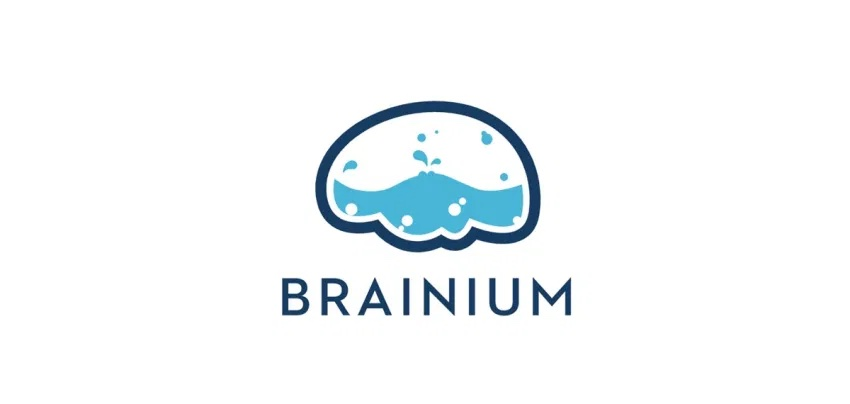

Customer Engagement Manager
 · Brainium Studios · Portland, OR
As the engagement manager of Brainium Studios, my responsibilties focused on trending
feedback from players through multi-channel communication tools, and improving player
support experience by implementing in-game chat to reduce resolution time.
2019 - Present
Project Coordinator
· KISS Events · Portland, OR
KISS Events is where I learned how to plan. As part of a team of two, Jodi Hills and I
created events for top ranking Daimler dealers. The dinner events that we planned ranged in
tables of 50-500. When
someone says prepare for the unknown, I came to understand this best while working for KISS.
2017 - 2019
 · Thinkful
· Thinkful